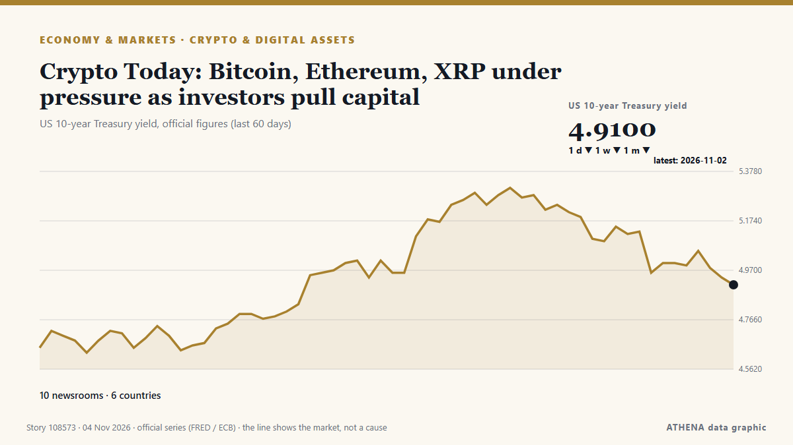

Économie, finance et marchés
SponsoriséPrésenté par  Cybernetics and Artificial Intelligence Lab Welcome to the Cybernetics and Artificial Intelligence Laboratory, established at the Department of Business Administration of the National and Kapodistrian University of Athens. The lab is headed by Professor Dimitrios Thomakos. The lab aims to do research that can be published in top venues. Our research uses tools and methods of Artificial Intelligence, and lies in the following areas: - Forecasting - Decision making - Cyber security - Finance We are always looking forward to collaborating with exceptional students!
Cybernetics and Artificial Intelligence Lab Welcome to the Cybernetics and Artificial Intelligence Laboratory, established at the Department of Business Administration of the National and Kapodistrian University of Athens. The lab is headed by Professor Dimitrios Thomakos. The lab aims to do research that can be published in top venues. Our research uses tools and methods of Artificial Intelligence, and lies in the following areas: - Forecasting - Decision making - Cyber security - Finance We are always looking forward to collaborating with exceptional students!
Les titres sont affichés en anglais, tels que publiés.
Veille des marchés - chiffres officiels
Dans quel sens évoluent les indicateurs officiels des marchés - hausse, baisse ou stabilité - avec la dernière valeur officielle et sa date, et l'actualité des marchés vérifiée par ATHENA. Valeurs officielles, pas des cours en temps réel.
Énergie
| 1 jour | 1 semaine | 1 mois | Valeur officielle | |
|---|---|---|---|---|
| Brent crude | ▼ | ▲ | ▲ | $123,10/bblDonnées officielles du 27 oct. 2026 |
| WTI crude | ▼ | ▼ | ▲ | $103,37/bblDonnées officielles du 27 oct. 2026 |
| US natural gas (Henry Hub) | ▲ | ▼ | ▼ | Mouvement inhabituel $2,76/MMBtuDonnées officielles du 27 oct. 2026 |
| European natural gas (1 mois · 3 mois · 12 mois)(1M · 3M · 12M) | ▲ | ▲ | ▲ | $25,49/MMBtuDonnées officielles du 1 sept. 2026 |
| Coal (Australia) (1 mois · 3 mois · 12 mois)(1M · 3M · 12M) | ▲ | ▲ | ▲ | $153,84/tDonnées officielles du 1 sept. 2026 |
Alimentation
| 1 mois | 3 mois | 12 mois | Valeur officielle | |
|---|---|---|---|---|
| Wheat | ▲ | ▲ | ▲ | $246,85/tDonnées officielles du 1 sept. 2026 |
Bourses américaines
| 1 jour | 1 semaine | 1 mois | Valeur officielle | |
|---|---|---|---|---|
| S&P 500 | ▼ | ▼ | ▼ | Direction seulement (indice © Cboe)Données officielles du 2 nov. 2026 |
| Nasdaq Composite | ▲ | ▼ | ▼ | Direction seulement (indice © Cboe)Données officielles du 3 nov. 2026 |
Taux, risque et dollar
| 1 jour | 1 semaine | 1 mois | Valeur officielle | |
|---|---|---|---|---|
| US 10-year Treasury yield | ▼ | ▼ | ▼ | 4,91 %Données officielles du 2 nov. 2026 |
| Market volatility (VIX) | ▲ | ▲ | ▲ | Direction seulement (indice © Cboe)Données officielles du 2 nov. 2026 |
| US dollar, broad index | ▬ | ▲ | ▲ | 121,67Données officielles du 30 oct. 2026 |
L'euro face aux autres monnaies
| 1 jour | 1 semaine | 1 mois | Valeur officielle | |
|---|---|---|---|---|
| EUR/USD | ▼ | ▲ | ▼ | 1,1179 USDDonnées officielles du 3 nov. 2026 |
| EUR/GBP | ▼ | ▼ | ▼ | 0,8336 GBPDonnées officielles du 3 nov. 2026 |
| EUR/CHF | ▼ | ▼ | ▼ | 0,9166 CHFDonnées officielles du 3 nov. 2026 |
| EUR/JPY | ▬ | ▲ | ▼ | 176,95 JPYDonnées officielles du 3 nov. 2026 |
| EUR/CNY | ▬ | ▲ | ▼ | 7,4590 CNYDonnées officielles du 3 nov. 2026 |
| EUR/TRY | ▼ | ▲ | ▲ | 55,892 TRYDonnées officielles du 3 nov. 2026 |
| EUR/NOK | ▼ | ▼ | ▼ | 10,3185 NOKDonnées officielles du 3 nov. 2026 |
Sources : Energy Information Administration des États-Unis (pétrole, gaz américain), FMI (gaz européen, charbon, blé), Trésor et Réserve fédérale des États-Unis (taux à 10 ans, indice du dollar) Cboe (VIX), S&P Dow Jones Indices (S&P 500) et Nasdaq (Nasdaq Composite), via FRED (Réserve fédérale de Saint-Louis) ; taux de référence de l'euro © Banque centrale européenne. Les chiffres sont les dernières valeurs officielles avec leur date, pas des cours en temps réel. Les directions sont calculées par ATHENA.
Crypto, ETF et actions dans l'actualité
- Crypto Today: Bitcoin, Ethereum, XRP under pressure as investors pull capital Risque 1.6 4 nov.
- Stocks wilt, dollar slides as early midterm results point to blue sweep Risque 3.6 4 nov.
- Japan, South Korea stocks fall over 4% as Democrats lead in US midterms Risque 1.1 4 nov.
- Seoul stocks face fresh uncertainty as Democrats retake US Congress Risque 1.1 4 nov.
- China's central bank to step up re-lending policy for stock repurchases and increased holdings Risque 0.0 4 nov.
- Block Inc. shares rise 6% after-hours as it raises full-year profit forecast Risque 0.0 4 nov.
- Want an iPhone Duo for the holidays? Apple’s latest stock update isn’t reassuring Risque 1.0 4 nov.
- Ruling party proposes gov't delay planned taxation of cryptocurrency Risque 0.0 4 nov.
- Bitcoin price falls below $80,000 again Risque 1.1 4 nov.
- Nasdaq Falls 2.9% on Fed Hike Fears | Global Economy, Nov 2 Risque 1.9 4 nov.

Crypto et actifs numériquesCrypto Today: Bitcoin, Ethereum, XRP under pressure as investors pull capital
Bitcoin (BTC) trades downward at $76,566 on Tuesday, testing six-week lows. de FXStreet
| 22 oct. | 82 |
|---|---|
| 23 oct. | 61 |
| 24 oct. | 28 |
| 25 oct. | 29 |
| 26 oct. | 119 |
| 27 oct. | 131 |
| 28 oct. | 128 |
| 29 oct. | 105 |
| 30 oct. | 115 |
| 31 oct. | 27 |
| 1 nov. | 69 |
| 2 nov. | 126 |
| 3 nov. | 96 |
| 4 nov. | 34 |
N. Korea says dialogue with U.S. an option but not a must for national interest
North Korea said Wednesday that dialogue with the United States remains an option for peace, but that it would not be necessary for its own interest while again stressing the U.S.' accusation of its… de The Korea Times
Gold firms on softer oil prices, US midterm results awaited
BENGALURU: Gold prices edged higher in early Asian trade on Wednesday as softer oil prices eased inflation concerns, while investors awaited US midterm election results and key labour market data for… de New Straits Times
David Jones failed to pay rent for Westfield stores, landlord says
Westfield’s parent company says David Jones is in breach of its tenancy agreement after failing to pay rent last month, as the embattled department store giant reportedly nears administration. de Sydney Morning Herald
Uber pays its drivers ‘wages’ and is liable for $81m payroll tax bill, Australia’s high court rules
Rideshare company unsuccessfully argued it didn’t employ workers and claimed money paid was not wages under NSW law The rideshare behemoth Uber has suffered a bruising loss in Australia’s high court… de The Guardian
Gold Falls 0.65% to US$3,922 as US Yields Rise | Gold & Silver, Nov 3
Gold fell 0.65% to US$3,922 an ounce as US yields rose to 4.93% and the dollar firmed. de The Rio Times
Proposition 40: How California could become the first US state to tax Billionaires' wealth
Proposition 40 would impose a one-time 5 per cent tax on Californians with net worths exceeding $1 billion. de The Independent
North Korea warns of stronger response to US ‘hostility’
The powerful sister of North Korea's leader is warning the United States that it will mount a stronger response to Washington's "invariable hostile policy" toward Pyongyang, the state news agency… de NDTV
Pierce Brosnan Endorses Callum Turner As Next James Bond As “He’s So Strong”; Josh O’Connor Reacts To Talk Around 007 Casting
Two names rumored to take on the James Bond role next are Callum Turner and Josh O’Connor, and reactions to the idea of them playing 007 on the big screen are coming in. de Deadline
Meta raises $15 billion in five-part US bond sale to fund AI expansion
Meta is aiming to raise between $20 billion and $25 billion in a bond sale as the company ramps up spending on infrastructure and AI models and services. de CNBC World
Hong Kong Q3 GDP expands by 5.2% year-on-year, outlook positive
Hong Kong’s economy grew by 5.2 per cent year on year in the third quarter, marking its 15th consecutive quarter of expansion, while retail sales rose by 6.4 per cent in September. de South China Morning Post
US stocks: S&P 500 ends down; Apple dips ahead of quarterly report
The major indices closed mixed for the day. de The Business Times
India’s manufacturing growth momentum eases in Oct
India’s manufacturing sector activity lost some growth momentum in October compared to September as output and new orders increased only marginally, according to HSBC India Manufacturing Purchasing… de Hindustan Times
Disney plans thousands of layoffs as managers asked to cut costs by 20%
California: Walt Disney is considering cutting thousands of jobs as the entertainment giant seeks to reduce costs, with some managers asked to identify annual savings of 20 per cent, Bloomberg… de Gulf News
Virgin Media O2 cutting thousands of jobs in cost savings overhaul
The bulk of the savings – about £300 million – will come from job cuts among its 16,000-strong UK workforce. de Evening Standard (London)
Bangladesh Garment Workers Stage Fourth Day of Wage Protests
Clashes were reported across industrial belts around Dhaka, including Ashulia, Gazipur and the capital's Mirpur area, as workers staged fresh demonstrations and attempted to block major highways. de CNA (Channel NewsAsia)
Apple shares slide as higher memory costs fuel margin concerns
Apple forecasts December-quarter gross margins of 45%-46%, including costs of upgrading its AI-powered Siri. de Express Tribune
Stolen watch worth US$290,000 returned to Japan store with sorry note
The theft occurred when a man posing as a customer tried on the Audemars Piguet timepiece and then fled the shop while it was still on his wrist. de Free Malaysia Today
The midterms and the world
A Democratic sweep of both houses of Congress would see big changes on energy and trade in particular. de Financial Times - Global economy
'Fuel of the poor' LPG soars in Pakistan, forcing rickshaw drivers to cut meals
LAHORE: For 13 years, Rashid Ali has driven a three-wheeled motorised rickshaw around Lahore in eastern Pakistan. de Business Recorder
Australia hikes rates to 18-year high to fight inflation
The Reserve Bank of Australia's decision was in line with expectations from economists polled by Reuters, and marked its fifth rate increase this year. de CNBC World
Australia name white-ball squads for England series
Host of fresh faces are included for the series. de Express Tribune
An unusual sexual bond between a bull and a male donkey
Sex between animals of the same sex is widespread in nature. de Phys.org
Gold rebounds from one-year low near $3,900
Shafaq News Gold prices bounced on Monday, after a selloff in the previous session, as weaker oil prices tempered inflation concerns, while investors assessed comments from the Federal Reserve for… de Shafaq News (English)
S&P cuts Meta’s outlook to negative
Meta has been given a negative outlook by S&P Global Ratings due to the company's hefty capital expenditures and concerns about free cash flow. de CNBC World
Billionaire tax divides California Democrats, draws myriad questions
California voters this midterm cycle will decide whether the state will impose a wealth tax on billionaire residents, as wealthy Californians organize against the measure and experts say its… de The Hill
Owner of Serbia's Delicenced ALTA Banka Gets Arrested
The Executive Board of the National Bank of Serbia has officially revoked the operating licence of Alta Banka a.d. de N1 Serbia (English)
US ISM Manufacturing PMI improces to 55.5 in October vs. 54.6 expected
Business activity in the United States (US) manufacturing sector expanded at an accelerating pace in October, with the Institute for Supply Management's Manufacturing Purchasing Managers' Index (PMI)… de FXStreet
Warren Buffett, 96, has ‘not had water in 48 years’: ‘No thank you. I’ll have a…’
Jeff Bezos shared insights on investing in artificial intelligence stocks while discussing broader market trends. de Times of India
Cracks In Turkey-Azerbaijan Ties: Israel And Aliyev’s Absence
Behind the specific disagreements, a broader geopolitical issue may be at play, as Ankara and Baku diverge on Iran, Israel and Armenia. de to vima
Jordan's king says 'no security or stability' in region without Palestinian homelan
Jordan’s King Abdullah II on Monday said there would be no security in the Middle East region until the Palestinians’ right to a homeland is fulfilled. de Hespress English
Bank of England poised to raise rates but may push back on bets for more
Economists polled expect it to raise the bank rate to 4% from 3.75%. de The Business Times
Anthropic plans to sell $3.5 billion of shares to Japan investors in IPO, filing shows
This will go towards raising working capital and funding operating expenses and capital expenditure. de The Business Times